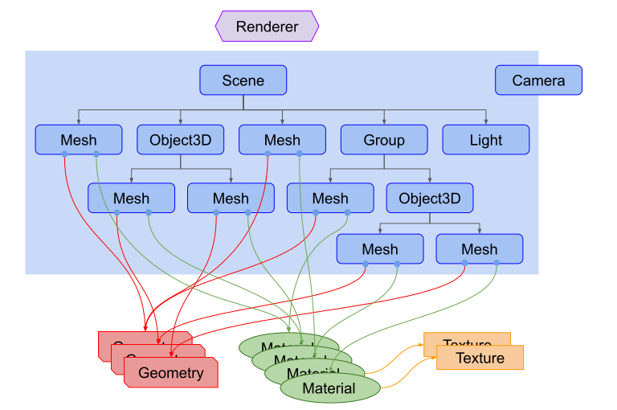
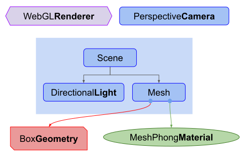
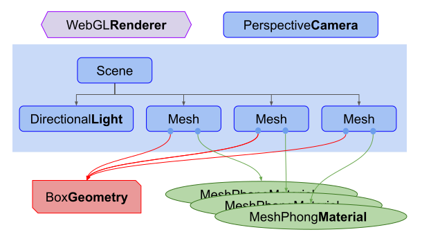

基础知识
这是有关 Three.js 的系列文章中的第一篇文章。 Three.js 是一个 3D 库，试图使 尽可能轻松地在网页上获取 3D 内容。
Three.js 经常与 WebGL 混淆，因为更常见的情况是 不是，但也不总是， Three.js 使用 WebGL 来绘制 3D。 WebGL 是一个非常低级的系统，仅绘制点、线和三角形。 要使用 WebGL 做任何有用的事情通常需要相当多的 代码，这就是 Three.js 的用武之地。它处理一些东西 例如场景、灯光、阴影、材质、纹理、3D 数学，以及您需要的所有内容 如果您要直接使用 WebGL，则必须自己编写。
这些教程假设您已经了解 JavaScript，并且，对于 大部分他们会使用 ES6 风格。 请参阅此处 您应该已经知道的事情的简短列表。 大多数支持 Three.js 的浏览器都会自动更新，因此大多数用户应该 能够运行这段代码。如果您想让这段代码运行 在非常旧的浏览器上，请查看像 Babel 这样的转译器。 当然，运行非常旧的浏览器的用户可能拥有机器 无法运行 Three.js.
学习大多数编程语言时，人们首先要做的就是
要做的就是让计算机打印"Hello World!"。对于 3D 的
最常见的第一件事就是制作 3D 立方体。
因此，让我们从“Hello Cube！”开始
在开始之前，让我们尝试让您了解该结构 一个three.js 应用程序的。一个 Three.js 应用程序需要你创建一堆 对象并将它们连接在一起。这是代表的图表 一个小型的 Three.js 应用

上图需要注意的事项。
有一个
Renderer。这可以说是 Three.js 的主要对象。你通过一个Scene和Camera到Renderer并渲染（绘制） 位于相机视锥体内的 3D 场景作为 2D 图像转换为 canvas.有一个scenegraph，它是一棵像树一样的树 结构，由各种对象组成，例如
Scene对象，多个Mesh对象、Light对象、Group、Object3D和Camera对象。一个Scene对象定义场景图的根并包含以下属性 背景颜色和雾。这些对象定义了分层的父/子 树状结构并表示对象出现的位置以及它们的状态 面向。孩子的位置和方向是相对于他们的父母的。对于 例如，汽车上的轮子可能是汽车的子级，因此移动和 确定汽车物体的方向会自动移动车轮。您可以阅读更多内容 关于这一点，请参阅关于场景图的文章。图中的注意事项
Camera是场景图的一半。这是为了 表示在 Three.js 中，与其他对象不同，Camera没有 在场景图中发挥作用。就像其他对象一样，Camera作为 其他某个对象的子对象将相对于其父对象移动和定向。 有一个将多个Camera对象放入场景图中的示例，位于 关于场景图的文章的末尾。Mesh对象表示绘制一个特定的Geometry与一个特定的Material. 两者Material对象和Geometry对象可以被多个使用Mesh对象。例如，要在不同位置绘制两个蓝色立方体，我们可能需要两个Mesh用对象来表示每个立方体的位置和方向。我们只需要一个Geometry来保存立方体的顶点数据，并且我们只需要一个Material指定颜色为蓝色。两者Mesh对象可能引用同一个Geometry对象和同一个Material物体。Geometry对象表示某些几何体的顶点数据，例如 球体、立方体、平面、狗、猫、人、树、建筑物等...... Three.js提供了多种内置的 几何基元。您还可以 创建自定义几何图形以及 从文件加载几何图形。Material对象代表 用于绘制几何图形的表面属性 包括使用的颜色以及光泽度等内容。Material也可以 引用一个或多个可以使用的Texture对象，例如， 将图像包裹到几何图形的表面上。
鉴于所有这些，我们将制作最小的“Hello Cube”设置 看起来像这样

首先让我们加载three.js
<script type="module"> import * as THREE from 'three'; </script>
重要的是你把type="module"放在脚本标签中。这使得
我们使用 import 关键字来加载 Three.js。从 r147 开始，这是
正确加载 Three.js 的唯一方法。模块的优点是可以轻松导入其他模块
他们需要。这使我们不必手动加载额外的脚本
它们依赖于.
接下来我们需要一个<canvas>标签，所以...
<body> <canvas id="c"></canvas> </body>
我们将要求 Three.js 绘制到该画布中，因此我们需要查找它。
<script type="module">
import * as THREE from 'three';
+function main() {
+ const canvas = document.querySelector('#c');
+ const renderer = new THREE.WebGLRenderer({antialias: true, canvas});
+ ...
</script>
查找画布后，我们创建一个 WebGLRenderer。渲染器
是负责实际获取您提供的所有数据的人
并将其渲染到画布上。
注意，这里有一些深奥的细节。如果你没有传递画布 到 Three.js 中，它会为你创建一个，但你必须添加它 到您的文档。添加位置可能会根据您的用例而变化 你必须更改你的代码，所以我发现传递画布 到 Three.js 感觉更灵活一些。我可以把画布放在任何地方 代码会找到它，而如果我有代码来插入画布 如果我的用例我可能需要更改该代码到文档中 改变了.
接下来我们需要一个相机。我们将创建一个 PerspectiveCamera.
const fov = 75; const aspect = 2; // the canvas default const near = 0.1; const far = 5; const camera = new THREE.PerspectiveCamera(fov, aspect, near, far);
fov 是 field of view 的缩写。在本例中，垂直方向为 75 度
维度。请注意， Three.js 中的大多数角度都以弧度为单位，但对于某些角度
透视相机采用度数的原因。
aspect 是画布的显示方面。我们将详细讨论细节
在另一篇文章中，但默认情况下画布是
300x150 像素，使宽高比为 300/150 或 2.
near 和 far 表示相机前面的空间
将被渲染。该范围之前或之后的任何内容
将被剪裁（不绘制）。
这四个设置定义了一个“截头体”。 平截头体是以下名称 类似于金字塔尖的 3D 形状，但尖端被切掉。在其他方面 Words 将“frustum”这个词视为另一种 3D 形状，如球体， 立方体、棱柱、平截头体。

近平面和远平面的高度由视场决定。 两个平面的宽度均由视野和方位决定。
定义的截锥体内的任何内容都将被绘制。外面的任何东西 不会。
相机默认向下看 -Z 轴，+Y 向上。我们将把我们的立方体 在原点，所以我们需要将相机从原点向后移动一点 为了看到任何东西.
camera.position.z = 2;
这就是我们的目标.

在上图中我们可以看到我们的相机位于z = 2。它正在寻找
沿 -Z 轴向下。我们的视锥体从距相机前端 0.1 个单位的位置开始
并转到摄像机前的 5 个单位。因为在这张图中我们是向下看的，
视野受方位影响。我们的画布是两倍宽
因为它很高，所以在画布上视野会比
我们指定的 75 度，即垂直视野。
接下来我们制作一个 Scene。 Three.js 中的 Scene 是场景图形式的根。
您想要 Three.js 绘制的任何内容都需要添加到场景中。我们会
详细介绍场景如何工作。
const scene = new THREE.Scene();
接下来我们创建一个BoxGeometry，其中包含盒子的数据。
几乎所有我们想要在 Three.js 中显示的东西都需要几何体，它定义了
构成 3D 对象的顶点。
const boxWidth = 1; const boxHeight = 1; const boxDepth = 1; const geometry = new THREE.BoxGeometry(boxWidth, boxHeight, boxDepth);
然后我们创建一个基本材质并设置其颜色。颜色可以 使用标准CSS样式6位十六进制颜色值指定。
const material = new THREE.MeshBasicMaterial({color: 0x44aa88});
然后我们创建一个Mesh。 Three.js 中的 Mesh 表示组合
三件事
- A
Geometry（物体的形状） - A
Material（如何绘制物体，闪亮或平坦，什么颜色，什么要应用的纹理等。） - 场景中该对象相对于其父对象的位置、方向和比例。在下面的代码中，父级是场景。
const cube = new THREE.Mesh(geometry, material);
最后我们将该网格添加到场景中
scene.add(cube);
然后我们可以通过调用渲染器的渲染函数来渲染场景 并将其传递给场景和相机
renderer.render(scene, camera);
这是一个工作示例
由于我们正在查看，因此很难判断这是一个3D立方体 它直接沿着 -Z 轴向下并且立方体本身是轴对齐的 所以我们只看到一张脸。
让我们为其旋转设置动画，希望这将使
很明显它是用 3D 绘制的。为了使其动画化，我们将使用以下命令在渲染循环内进行渲染
requestAnimationFrame.
这是我们的循环
function render(time) {
time *= 0.001; // convert time to seconds
cube.rotation.x = time;
cube.rotation.y = time;
renderer.render(scene, camera);
requestAnimationFrame(render);
}
requestAnimationFrame(render);
requestAnimationFrame是对浏览器的请求你想要动画化一些东西。
您向它传递一个要调用的函数。在我们的例子中，该函数是 render。浏览器
将调用您的函数，如果您更新与显示相关的任何内容
页面浏览器将重新呈现页面。在我们的例子中，我们调用三
renderer.render 函数将绘制我们的场景。
requestAnimationFrame 传递自页面加载以来的时间
我们的职能。时间以毫秒为单位流逝。我发现很多
使用秒更容易，所以在这里我们将其转换为秒。
然后我们将立方体的 X 和 Y 旋转设置为当前时间。这些轮换 以弧度为单位。有 2 个 pi 弧度 绕一圈，所以我们的立方体应该在每个轴上旋转一圈，时间约为 6.28 秒.
然后我们渲染场景并请求另一个动画帧继续 我们的循环.
在循环之外我们调用requestAnimationFrame一次来启动循环.
它好一点了，但仍然很难看到3d。有什么帮助的是 添加一些照明所以让我们添加一盏灯。里面的灯有很多种 我们将在以后的文章中介绍 Three.js。现在让我们创建一个定向光。
const color = 0xFFFFFF; const intensity = 3; const light = new THREE.DirectionalLight(color, intensity); light.position.set(-1, 2, 4); scene.add(light);
定向光有一个位置和一个目标。两者都默认为 0, 0, 0。在我们的 在这种情况下，我们将灯光的位置设置为 -1, 2, 4，因此它稍微位于左侧， 在我们相机的上方和后面。目标仍然是 0, 0, 0 所以它会发光 朝向原点。
我们还需要更改材质。 MeshBasicMaterial 不受
灯。让我们将其更改为受灯光影响的MeshPhongMaterial。
-const material = new THREE.MeshBasicMaterial({color: 0x44aa88}); // greenish blue
+const material = new THREE.MeshPhongMaterial({color: 0x44aa88}); // greenish blue
这是我们的新程序结构

这是工作中.
现在应该是非常清晰的3D了.
只是为了好玩，让我们再添加2个立方体。
我们将为每个立方体使用相同的几何形状，但制作不同的几何形状 材质，因此每个立方体可以是不同的颜色。
首先我们将创建一个创建新材质的函数 与指定的颜色。然后它使用创建一个网格 指定的几何体并将其添加到场景中并且 设置其 X 位置。
function makeInstance(geometry, color, x) {
const material = new THREE.MeshPhongMaterial({color});
const cube = new THREE.Mesh(geometry, material);
scene.add(cube);
cube.position.x = x;
return cube;
}
然后我们将使用 3 种不同的颜色和 X 位置调用它 3 次
将 Mesh 实例保存在数组中。
const cubes = [ makeInstance(geometry, 0x44aa88, 0), makeInstance(geometry, 0x8844aa, -2), makeInstance(geometry, 0xaa8844, 2), ];
最后，我们将在渲染函数中旋转所有 3 个立方体。我们 为每个计算稍微不同的旋转.
function render(time) {
time *= 0.001; // convert time to seconds
cubes.forEach((cube, ndx) => {
const speed = 1 + ndx * .1;
const rot = time * speed;
cube.rotation.x = rot;
cube.rotation.y = rot;
});
...
这是那个.
如果将其与上面的自上而下的图进行比较，您可以看到 它符合我们的期望。立方体位于 X = -2 和 X = +2 它们部分位于我们的视锥体之外。他们也是 由于视野有些夸张地扭曲 整个画布是如此极端。
我们的程序现在具有这样的结构

如您所见，我们有3个Mesh对象，每个对象引用相同的BoxGeometry。
每个Mesh引用一个唯一的MeshPhongMaterial，这样每个立方体都可以有
不同的颜色。
我希望这个简短的介绍有助于开始。 接下来我们将介绍 使我们的代码具有响应能力，以便适应多种情况.